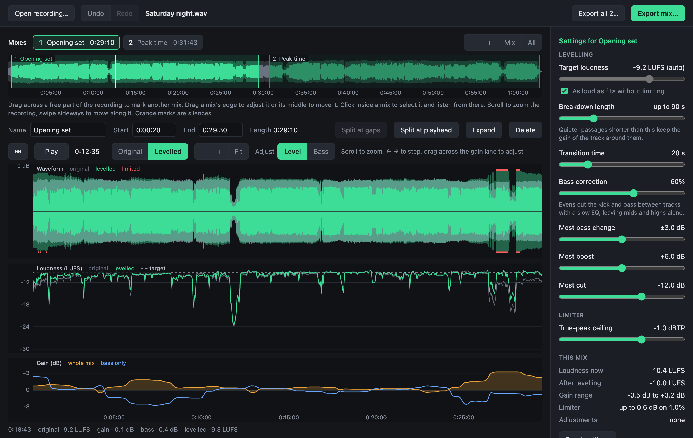

Even out a recorded DJ mix, track by track.
Open a recording of a set or a whole night, mark the mix inside it, and get it back with every track at the same loudness. Louder tracks come down, quieter ones come up, and the breakdowns keep their dip.
On Windows you can also get it from the Microsoft Store, which keeps it up to date and needs no warning to click past.
{{VERSION_LINE}} Free and open source. What's new

What it does
Levels tracks, not moments
A slow gain curve follows how loud each track is at full energy. It is not a compressor: the dynamics inside a track are left alone.
Breakdowns stay breakdowns
A quiet passage shorter than about a minute and a half keeps the gain of the track around it, so nothing gets pumped up before the drop.
Record the night itself
Record from a DJ mixer's sound card or any other input, with meters to set the level first. A long night is written in parts, so one lost file never loses the evening, and the parts open together as one recording, ready to level.
Made for whole nights
Recordings are hours long, so nothing is loaded whole. Silences between sets are found for you, and a check-up says if the recording clipped or a channel went missing.
Hear it before you export
Play any part and bypass the processing to hear the recording as it is. Every setting changes what you hear straight away.
Your hands on it when needed
Raise or lower any stretch by hand, level the kick and bass separately from everything above them, and fade the ends of a mix by dragging a corner.
Ready for where it is going
Pick a loudness for a club system, streaming, a radio show or broadcast. A true-peak limiter holds your ceiling. Export as WAV, FLAC, MP3 or AAC with the tags filled in.
A video for YouTube
Export a mix as an MP4 video that moves to the music: pick a template, a colour, a font, a logo or a photo of your own, and see it play before you export. Or make your own template, layer by layer, with effects that follow the bass and the beat, and share it as a file.
The tracks, in order
Mark where each track starts, or import the list from your DJ software and drag the markers into place. Copy it for a video's description, and players show the tracks as chapters.
Opening it the first time
The installers are not signed with Apple or Microsoft, so those systems ask you to confirm. This is needed once.
Mac
- Open the downloaded disk image and drag the app to Applications.
- Open the app. macOS blocks it.
- In System Settings, go to Privacy & Security, scroll down and click “Open Anyway”.
Needs a Mac with Apple Silicon and macOS 13 or later.
Windows
- Run the downloaded setup file.
- When “Windows protected your PC” appears, click “More info”.
- Click “Run anyway”.
Or install it from the Microsoft Store: no warning, and it updates itself.
Needs 64-bit Windows 10 or later.
Linux
- Make the downloaded file executable:
chmod +x DJ*.AppImage, or under Properties → Permissions in a file manager. - Run it.
- If nothing happens, install FUSE 2, which AppImages need. On Ubuntu 24.04:
sudo apt install libfuse2t64.
Needs 64-bit Linux on an Intel or AMD processor. Newer than the other two, and less tried.
Free, and staying free
DJ Mix Master is free, and it always will be: every feature, for everyone, with no accounts, no advertising and nothing held back for a paid version. It is made in spare time, by one person. If it saves you hours on your recordings and you would like to say thanks, you can sponsor its development on GitHub, once or every month. It helps pay for the time, and for testing on more sound cards and systems.
♥ Sponsor on GitHubOnce or monthly, any amountGood to know
Your recording is never changed and never leaves your computer. The only thing the app contacts is GitHub, at most once a day, to see whether a newer version exists, and that can be switched off in Settings. A recording that was made too hot is turned down to match the rest, but clipping cannot be undone. How the levelling works, every setting and a command-line version are described in the documentation.